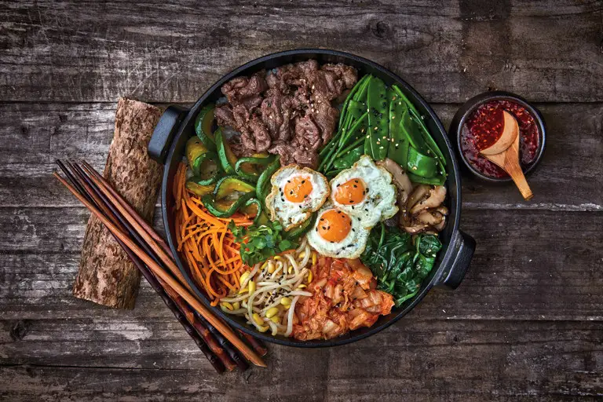

Sumérgete en la cultura a través de su cocina, donde el lema "la comida es medicina" define una dieta rica en nutrientes y baja en grasas. Donde encontraras la vibrante experiencia del BBQ coreano en la mesa hasta la variedad de platos (banchan) que acompañan al arroz, cada comida es un banquete de sabores agridulces, picantes y umami que no te puedes perder.
Introduccion
Platos Destacados
Sam Gyeob Sal (삼겹살)

Bibimbap (비빔밥)
